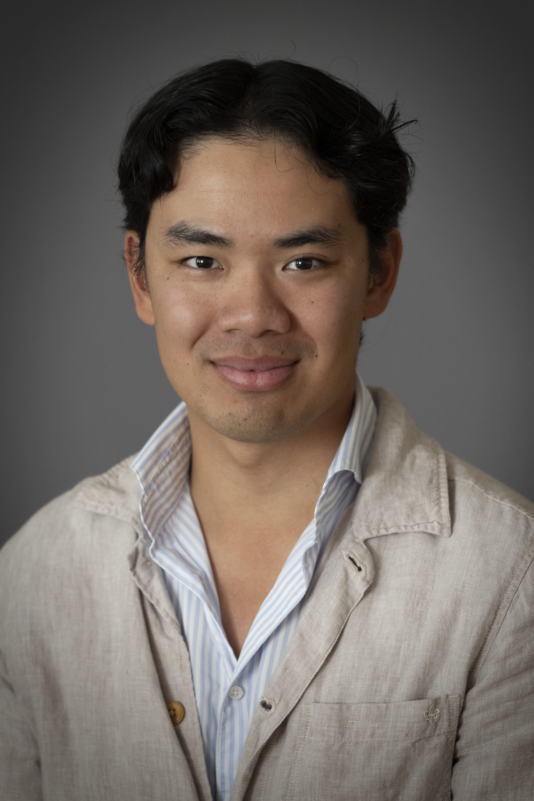

Hi, I am Marcus
I am a Ph.D. student in Economics at Uppsala University. My research focuses on empirical labor and health economics. Before joining Uppsala University, I worked as a Teaching Assistant at the Department of Economics at Lund University.
I hold an MSc in Economics, an MSc in Health Economics, a BSc in Economics, and a BSc in Business Economics, all from Lund University.
News
2025-12-09: My project with Helena Svaleryd (principal investigator) and Jonas Vlachos received a grant of 866650 SEK from IFAU to study the impact of schools on students' mental health.
2025-02-21: I won the Bertil Ohlin Institute thesis competition for my Master's thesis Automation Risk From AI Affects Young Adults Occupation Choice!
Contact Information
Email: marcus.rundstrom@nek.uu.se
Phone: +46 761488898
Office: Ekonomikum, Room E428
Post adress:Department of Economics, Uppsala University P.O. Box 513 SE-751 20 Uppsala, Sweden
Find Me
Uppsala, Sweden